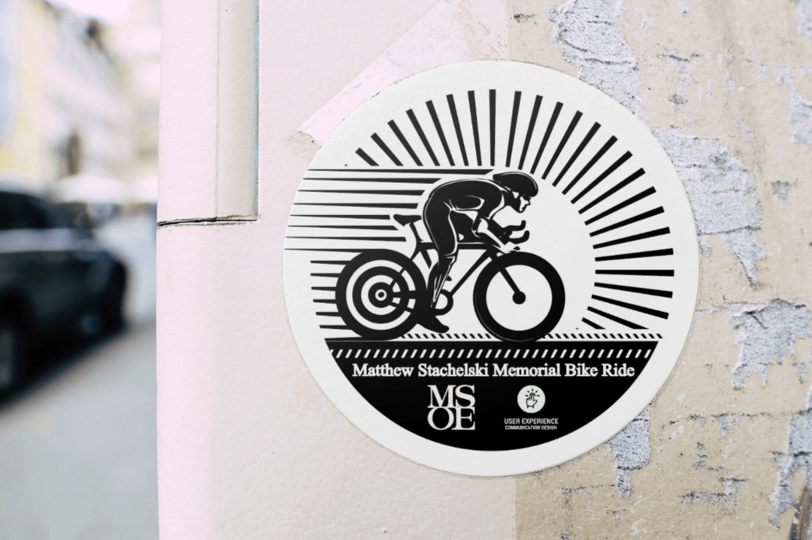
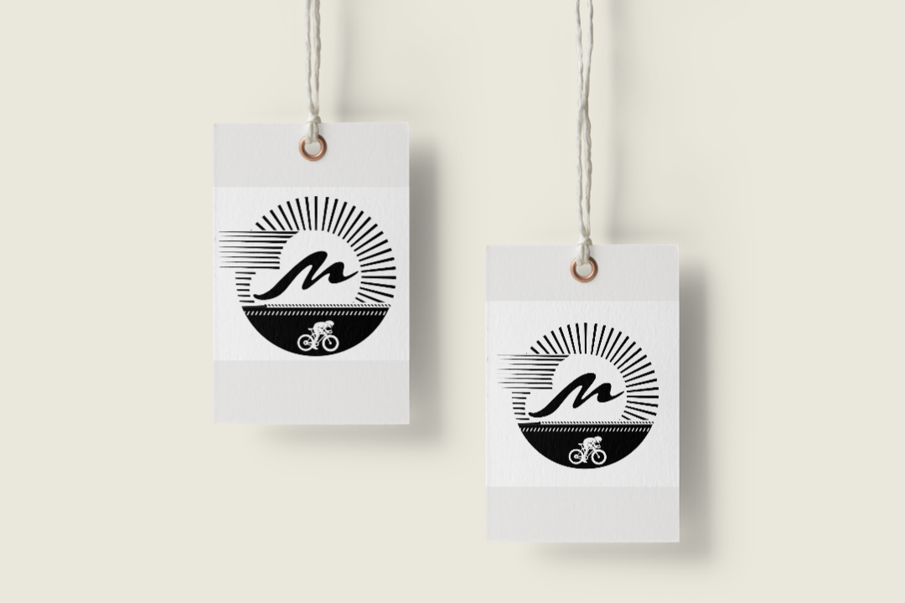
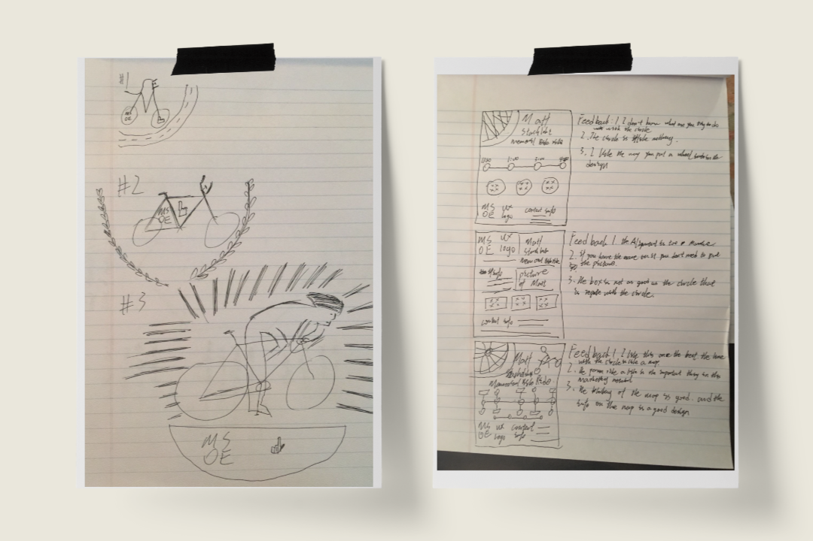

Logo
Logo is usually created by its emblem and add some wordmark, this establish relations that help audiences create a connection between this event and its mean purpose. This time I did the opposite. I first designed the logo and then looked for the elements that can make up the icon from the logo.
My initial concept is to ride toward the morning sun. The sun slowly rises on the horizon, and a cyclist is riding toward his dream. , People can even see the wind behind him. The silhouettes of the characters and bicycles in the logo mainly refer to Matt’s life photos, created by Adobe Illustrator.
The overall shape is a circle, and the horizon is located at one-third of the entire picture. The feeling of light is depicted with short lines, and the charm of wind is depicted by changing the shape of the lines from thin to thick.
I would call it the breaking wind.

Icon
Through the simplification and summary of the logo, I came up with two icon designs. The first one contains elements that do not contain wind, and the second one contains elements that contain wind. I surveyed a large number of audience feedback comparisons, and almost every feedback was designed to be more concise and better. At the same time, according to the design essentials of the icon, that is concise and clear, I finally selected the icon that does not include the wind element.

Project Challenges
As my first undergraduate design, it is also the first time that market research and response need to be considered in the design scheme. Different from a pure design that only pursues aesthetics, this time the design also needs to take into account the feedback of the user community. While ensuring aesthetics, I also pursue user acceptance and even make changes to the feedback given by test users.